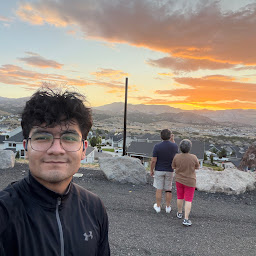

Ernesto Hernandez | WDD 130

Hello My name is Ernesto Hernandez, and I am from Mexico City. I have lived in Utah for over a decade, and I enjoy looking at the mountains and taking in the beautiful views. I enjoy reading fiction books and sleeping. I am currently studying software development and trying my best to learn as much as I can. It's a slow journey with lots to learn and plenty of homework, but nevertheless, it's something I truly enjoy